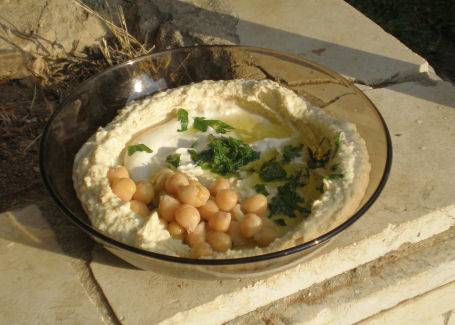
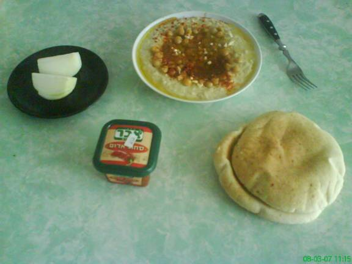

2 чашки зерен хумуса
Пол чашки сырой тхины
2 лимона
4 зубца чеснока
Пол чайной ложки питьевой соды
Оливковое масло
Петрушка
Соль
Красный перец (паприка)
Сначала готовим отдельно Хумус и Тхину:
Моем зерна хумуса в воде и перебираем.
Замачиваем зерна хумуса в воде на ночь (чтоб вода покрывала зерна как минимум в два раза).
Утром ставим зерна вариться в новой воде (без соли) и сразу сыпем пол чайной ложки соды. Воды не жалеть.
Варим около двух часов. Если нужно подливаем воды.
Оставляем немного зерен (около чашки) целыми, остальные давим ложной (как на пюре) желательно не в миксере.
Хумус готов!
Во время того, как хумус варится, готовим Тхину:
Льем пол чашки сырой тхины в глубокую тарелку. Начинаем помешивать и подливать холодной воды (или воды в которой варился хумус) пока тхина не станет жидковатой. Добавляем сок из одного лимона (и помешиваем). В конце концов тхина должна принять белый цвет. Добавляем соль по вкусу.
Теперь готовим само блюдо:
На каждую порцию берем четверть массы давленых зерен, четверть готовой тхины, перемешиваем, сверху кладем немного целых зерен хумуса (из тех что оставили), посыпаем резаной петрушкой, паприкой, резанным чесноком (немного) и поливаем оливковым маслом.
Несколько картинок того как это должно выглядеть и с чем это есть:


Не стесняйтесь задавать вопросы автору, пишите на адрес указанный вверху.
Приятного аппетита!